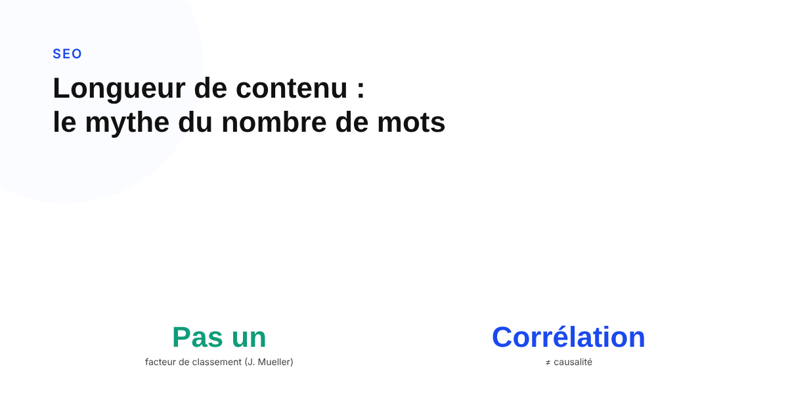
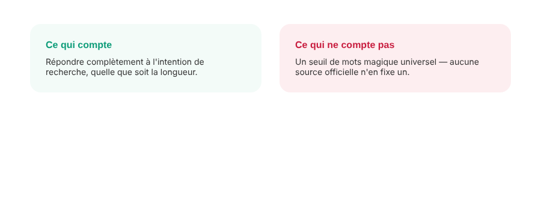

Longueur de contenu et SEO : pourquoi le nombre de mots n'est pas ce qui compte
« Il faut au moins 2000 mots pour ranker » revient dans presque tous les briefs de contenu. Google, par la voix de John Mueller, a démenti cette idée à plusieurs reprises. Voici pourquoi le mythe persiste malgré tout, et ce qui compte réellement à sa place.

Presque tous les outils d'aide à la rédaction SEO affichent un objectif de nombre de mots, calé sur la moyenne des pages qui rankent en première page. Le réflexe qui en découle — écrire plus long pour écrire mieux classé — s'est transformé en quasi-règle d'or du content marketing. Pourtant, la position de Google sur cette question précise est sans ambiguïté depuis plusieurs années, et elle va à l'encontre de cette pratique largement répandue.
Ce que Google a dit, et qui le dit
John Mueller, de l'équipe Search de Google, a écrit sur Reddit une phrase devenue une référence dans le milieu : le nombre de mots n'est pas un facteur de classement, et il conseillait d'« éviter de se fatiguer » à essayer de l'optimiser pour cette seule raison. Il est allé plus loin en expliquant qu'imiter la longueur des articles déjà en tête des résultats ne garantit en rien d'atteindre leur position : une comparaison qu'il a illustrée en soulignant qu'avoir le même nombre d'étoiles qu'un autre produit ne rend pas deux produits identiques pour autant. Ces propos sont relayés de façon cohérente par plusieurs sources spécialisées, mais restent des citations secondaires d'échanges publics (Reddit, réseaux sociaux) plutôt que des lignes figées dans la documentation officielle de Search Central : la position est constante dans le temps, mais le lecteur exigeant doit garder cette nuance de source en tête.
Pourquoi le mythe survit : une vraie corrélation, mal interprétée
Le mythe ne vient pas de nulle part : des études de corrélation, menées par différents outils SEO, observent régulièrement que les pages en première page de résultats affichent une longueur moyenne supérieure à celle des pages moins bien classées. C'est une corrélation réelle et répétée, mais une corrélation n'est pas une preuve de cause. Mueller lui-même a précisé ce point : dire que le nombre de mots n'est pas un facteur de classement ne signifie pas que la longueur n'a aucun lien indirect avec d'autres facteurs qui, eux, comptent réellement.

Ce qui explique vraiment la corrélation
Plusieurs mécanismes indirects, documentés par ailleurs dans les lignes directrices de Google sur le contenu utile, expliquent pourquoi un contenu plus long tend à mieux performer sans que la longueur elle-même soit en cause : un texte plus développé couvre statistiquement plus de sous-questions liées à l'intention de recherche réelle de l'internaute, offre davantage de surface pour une expertise démontrée (un des piliers de l'E-E-A-T), et génère plus naturellement des opportunités de liens entrants vers un contenu perçu comme une référence sur son sujet. Ce sont la couverture de l'intention, l'expertise démontrée et les liens qui comptent — la longueur n'est qu'un effet de bord statistiquement associé à ces trois facteurs quand un sujet est traité avec sérieux.
Un repère interne reste acceptable, un objectif affiché ne l'est pas
Mueller a lui-même nuancé sa position sur l'usage pratique d'un objectif de mots : utiliser une fourchette de longueur comme repère interne pour un rédacteur, dans le but d'encourager un contenu plus complet, reste une pratique raisonnable. Le problème commence quand ce chiffre devient la finalité elle-même — gonfler artificiellement un texte avec des répétitions ou des généralités pour atteindre un objectif de mots, au lieu de répondre réellement et complètement à l'intention de recherche qui a amené le lecteur sur la page.
FAQ
Un article de 2000 mots est-il mieux classé qu'un article de 500 mots ?
Pas automatiquement. John Mueller, de l'équipe Search de Google, a affirmé que le nombre de mots n'est pas un facteur de classement, et que copier la longueur des articles les mieux classés ne suffit pas à faire ranker une page à leur place. Ce qui compte est la réponse apportée à l'intention de recherche, pas le compteur de mots.
Pourquoi les articles longs sont-ils quand même souvent mieux classés ?
Probablement par corrélation plutôt que par causalité directe. Un contenu plus long couvre souvent plus de sous-questions liées à l'intention de recherche, attire plus de liens entrants, et traite un sujet avec plus de profondeur — autant de facteurs qui, eux, comptent réellement. La longueur est alors un symptôme d'un contenu complet, pas la cause du bon classement.
Faut-il quand même fixer un objectif de nombre de mots à un rédacteur ?
Mueller lui-même a nuancé sa position sur ce point précis : utiliser un nombre de mots comme repère interne pour un rédacteur, afin d'encourager un contenu plus complet, reste acceptable. Le problème n'est pas d'avoir un repère de longueur en coulisses, mais de le présenter comme la raison du classement, ou de gonfler artificiellement un texte pour l'atteindre.
Envie d'un contenu qui couvre vraiment l'intention de recherche, pas juste un objectif de mots ?
Pour aller plus loin, voir la page SEO, et l'article E-E-A-T : ce que Google vérifie vraiment.
Pour continuer sur ce sujet.